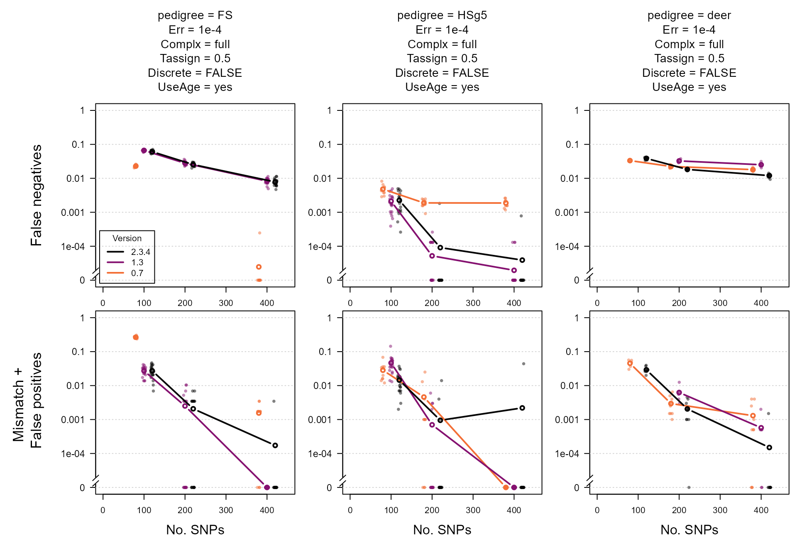

Performance stats
performance_stats.RmdIntroduction
This dataset has not been kept up-to-date. If you are interested, please contact me and I will add the data from my performance checks on the latest versions
The way sequoia is implemented, comparing likelihoods
for many different relationships and making assignments in a sequential
fashion, means that edits to improve performance for one particular type
of dataset may negatively affect performance in other datasets.
Therefore, each new version of sequoia is tested
extensively on both simulated and real data before release on CRAN. This
includes simulated data from the three pedigrees described in Huisman (2017) with
a wide range of parameter combinations, the results of which are
available here.
Data description
The files are in .RData format, which can be opened inside R with
load('path/to/ThisFile.RData'). Each .RData file contains a
12-dimensional array named PCcount, which contains the
amalgamated $Counts outputs from PedCompare()
between the true pedigree and the pedigree reconstructed from simulated
genotype data. This is identical to the EstConf() output
element $PedComp.fwd (forward: comparison relative to the
the first, original pedigree).
The first dimension has length 1, and its dimname indicates the sequoia version. The second dimension indicates the pedigree:
- ‘FS’ : single generation with 1157 individuals produced by 432 monogamous matings with variable family size (1-11), 0% of parents genotyped. 1014 individuals have one or more full siblings, 143 are singletons.
- ‘HSg5’ : five non-overlapping generations with full siblings and Half Siblings. Each generation, 24 females mate with 2 males each and 16 male with 3 females each, each mating results in 4 offspring. A random 40% of parents are simulated as non-genotyped.
- ‘deer’ : Seventeen birth year cohorts from the Rum red deer study population: overlapping generations, some close inbreeding, and a tendency for related females to mate with the same male. There are 1998 individuals in the pedigree, of which 1642 with a dam and 1202 with a sire. A random 40% of parents are simulated as non-genotyped.
Dimensions 3-8 relate to sequoia() input parameters,
with the presumed genotyping error rate Err equalling the
simulated error rate. Dimension 9 is the replicate, and dimensions 10-12
correspond to the PedCompare() $Counts output
dimensions.
For versions prior to 1.3, the column names were relabelled to match the current names.
# for dimnames of output:
data(Ped_HSg5, package="sequoia")
PC <- sequoia::PedCompare(Ped_HSg5, Ped_HSg5, Plot=FALSE)
ScoresToCount <- function(A) {
Cnt <- array(NA, dim=dim(PC$Counts), dimnames = dimnames(PC$Counts))
Cnt[,"Total",] <- A[,"Total",]
Cnt[,"Match",] <- A[,"OK",] + A[,"Part",]
Cnt[,"Mismatch",] <- A[,"Er",]
Cnt[,"P2only",] <- 0 #included in Er
Cnt[,"P1only",] <- A[,"None",]
return( Cnt )
}Load the data
The data must first be downloaded before you can work with it in R. Let’s compare the oldest, newest, and an in-between version.
click on the Code button on the right to see the R
code
Version <- c("0.7", "1.3", "2.3.4")
# make a folder to store the files in
dir.create("sequoia_files")
gitfolder <- "https://raw.githubusercontent.com/JiscaH/sequoia_archives/main/performance_tests/"
for (v in Version) {
download.file(url = paste0(gitfolder, "sequoia_PCcount_v", v, ".RData"),
destfile = paste0("sequoia_files/PCcount_v", v, ".RData"))
}Then combine the datasets from the separate versions into a single
array. This can e.g. done with abind::abind(), or ‘by
hand’:
load(paste0("sequoia_files/PCcount_v", Version[1], ".RData"))
PCC <- array(dim = c(length(Version), dim(PCcount)[-1]),
dimnames = c(list(version=Version), dimnames(PCcount)[-1]))
PCC[1,,,,,,,,,,,] <- PCcount[1,,,,,,,,,,,]
if (length(Version) > 1) {
for (v in Version[-1]) {
load(paste0("sequoia_files/PCcount_v", v, ".RData"))
PCC[v,,,,,,,,,,,] <- PCcount[1,,,,,,,,,,,]
}
}
rm(PCcount)An overview of the parameter combinations that were run can for example be created like this:
Plot
The parameter to vary on the x-axis is usually the explanatory
variable we are most interested in. Here we use the number of SNPs,
which also forms a useful proxy for the general ‘informativeness’ of the
SNP data. On the y-axis we have the proportion of non-assignments
(P1only, top row of panels) and the proportion of incorrect
assignments (Mismatch + P2only, bottom row).
Lastly, we show a few different parameter combinations in the different
panel columns.
This set-up and these parameter combinations are just an example of how this data can be visualised, intended as a starting point for further exploration.
To make the code more clear, we define (1) a function to get a subset from the large array, (2) a function to do the actual plotting, and (3) the parameter values to use, before (4) doing the actual plotting. This makes it easier to e.g. change the parameter values, which can be done at just a single place in the code, without having to change anything else.
1. A function to get the desired slice of the huge array:
subset.PCC.specs <- function(PCCIN, # 12D array
specs) # 1-row df, names = (subset of) dimnames of PCC
{
dn <- names(dimnames(PCCIN))[1:8]
those <- as.list(specs)[dn]
names(those) <- dn
for (d in dn) {
if (is.null(those[[d]])) those[[d]] <- dimnames(PCCIN)[[d]]
}
those <- lapply(those, as.character)
OUT <- PCCIN[those[[1]],those[[2]],those[[3]],those[[4]],those[[5]],
those[[6]],those[[7]],those[[8]], , , , ]
# there almost certainly is a more elegant way of doing this.
return( OUT )
}2. Plotting function :
# required packages:
library(plotrix) # for axis.break()
library(plyr) # defines aaply(): as apply(), but consistent output format
# minimum detectable error rate:
# 1 / (2*1000 * 20) # 2.5E-5
Yzero <- 1e-5
YAT <- 10^seq(-5, 0, 1)
BRK <- 10^-4.8 # break in y-axis
PlotFun <- function(ARER, COL, All = TRUE, Avg = TRUE) {
if (Avg) ARER.avg <- plyr::aaply(ARER, 1:2, mean, na.rm=TRUE) # average over iterations
LL <- as.numeric(dimnames(ARER)$nSnp) # x-axis
Offset <- setNames(seq(-20, 20, length.out = dim(ARER)[1]), dimnames(ARER)[[1]])
# set up the plot & axes:
plot(1:2, 1:2, type = "n",
xlim=c(0, 450), ylim = c(Yzero, 1), log="y",
yaxt="n", ylab="", xlab="", las=1, cex.lab=1.2)
axis(2, at=YAT, labels=c(0, YAT[-1]), las=1, cex.axis=1.1)
plotrix::axis.break(2, breakpos=BRK, style = "slash", brw=0.03)
abline(h=YAT, col="lightgrey", lty=3)
# plot points & lines:
if (All) {
for (v in Version) {
Y <- ARER[v,,]
Y[Y==0] <- Yzero # else not plotted if y-axis logarithmic
x <- rep(LL + Offset[v], each=ncol(Y))
points(jitter(x, factor=0.2), t(Y), pch=16,
col = adjustcolor(COL[v], alpha.f=0.5), cex=0.8)
}
}
if (Avg) {
for (v in Version) {
Y <- ARER.avg[v,]
Y[Y==0] <- Yzero # else not plotted if y-axis logarithmic
lines(LL + Offset[v], Y, type="b", col=COL[v], lwd=2)
}
}
}3. Specify parameters & colours:
PlotSpecs <- data.frame(pedigree = c("FS", "HSg5", "deer"),
Err = "1e-4",
Complx = "full", #c("mono", "full", "full"),
Tassign = 0.5,
Discrete = FALSE,
UseAge = "yes")
COL <- setNames( hcl.colors(n=length(Version)+1,
palette="inferno")[seq_along(Version)],
rev(Version)) # match each color to a particular version
# NOTE: hcl.colors() doesn't work in old R versions4. Calculate rates from counts & plot
When the pedigree includes dummy individuals and sibship-grandparents, the denominator for the assignment and error rate is not unambiguous.
In the paper and the vignette, the total number of individuals with a dam/sire is used to calculate the assignment rate, and the total number of individuals in a pedigree for the error rate (founders can also have an incorrect parent assigned). These seem the most relevant metrics for e.g. comparisons to other methods.
Here, to more clearly show the difference between versions, we calculate assignment rates as a proportion of the maximum number that could have been assigned by sequoia.
PedN <- c(FS = 1157, HSg5 = 1000, deer = 1998) # denominators for error rate
par(mfcol=c(2, nrow(PlotSpecs)), mai=c(.3, .6, 0, 0), omi=c(.5,.6,1.3,.1), xpd=F)
for (n in 1:nrow(PlotSpecs)) {
# subset data, using the function defined above
Data <- subset.PCC.specs(PCC, PlotSpecs[n,])
ccat <- c("GG","GD","DG","DD")
# calculate assignment & error rates
ARER <- list(
AR = plyr::aaply(Data, 1:3, function(A)
mean(A[ccat, "P1only", ] / colSums(A[ccat, "Total",]))),
# mean(A["TT", "P1only", ] / A["TT", "Total",])), # denominator = all
ER = plyr::aaply(Data, 1:3, function(A)
sum(A["TT", c("Mismatch", "P2only"), ]) / PedN[PlotSpecs[n,"pedigree"]])
)
YLAB <- c("AR" = "False negatives",
"ER" = "Mismatch + \n False positives")
Title <- paste(colnames(PlotSpecs), PlotSpecs[n,], sep=" = ", collapse = "\n")
# plot using the function defined above, then add margin text & legend
for (z in c("AR", "ER")) {
PlotFun(ARER[[z]], COL = COL, All = TRUE, Avg = TRUE)
if (z == "AR") mtext(Title, side=3, line=1, cex=0.9)
if (z == "ER") mtext("No. SNPs", side=1, line=3, cex=1.0)
if (n==1) mtext(YLAB[[z]], side=2, line=5, cex=1.1)
if (z == "AR" & n==1)
legend("bottomleft", names(COL), lty=1, lwd=2, col=COL, inset=.02,
title="Version")
}
}
Comments
At first glance, the average across iterations seems to suggest that version 2.3.4 performs worse than version 1.3 for the ‘FS’ and ‘HSg5’ pedigrees. However, the results for the individual runs show that this difference is not statistically significant and/or due to a single poor run (middle column, 400 SNPs). For the more complex ‘deer’ pedigree (right column), version 2.3.4 outperforms version 1.3.
For the ‘FS’ pedigree, the assignment rate was noticeably higher in the oldest version, but so was the error rate. The difference is largely due to considering ‘full cousin’ (3rd degree relatives) as a relationship alternative. See also pairwise likelihoods on how to recover some of these non-assigned pairs.
The variation between replicates is partly due to variation in which parents are simulated as genotyped: if several parents in a complicated pedigree loop are all non-genotyped, assignment errors are more likely than when in these more complicated regions of the pedigree a high proportion of parents are genotyped. See main vignette for more information on the difference in assignment rate between genotyped-genotyped versus genotyped-dummy and dummy-dummy pairs.